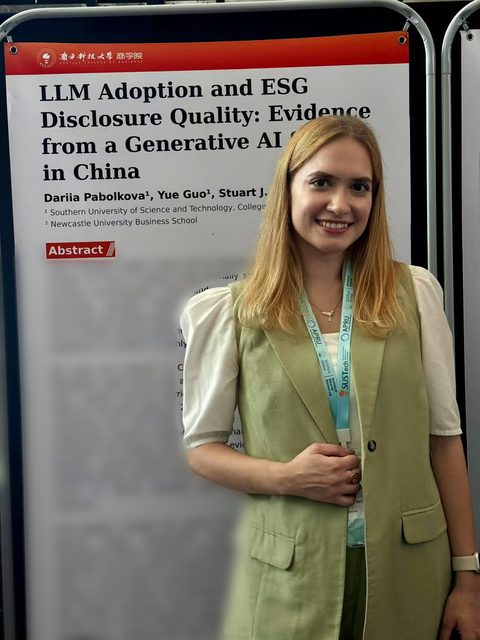

Submitted
LLM Adoption and ESG Disclosure Quality: Evidence from a Generative AI Shock in China
- Research directions
- Generative AI as an information-production technology · corporate disclosure quality · measuring form and substance in reporting.
- Methods
- Staggered difference-in-differences on a firm-year panel · NLP measures of disclosure · robustness and inference diagnostics.
- Status
- Submitted. An earlier version of the manuscript was presented as a Lightning Talk at the “APEC Shenzhen, Advancing with AI” 2026 International Youth Event and received the Outstanding Paper Award.
